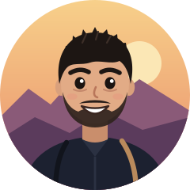

Naor Zamir

AI / ML developer with a passion for technology, finance & scienceI've been working on AI for the past years, focused on technology innovation.
AI. I've worked with ML and deep learning for 5+ years.
- Most of my recent time goes into large language models: how they're built, how to fine-tune and optimize them, and how to run open-weight models on everyday hardware
- I enjoy learning how to build datasets, evaluating models, and figuring out why something isn't working
- I try to keep up with a field that changes every month, and I'm happy to admit how much there is still to learn
Projects. Dale is a personal assistant I built on a small local model (qwen3.5:9b).
- It can read, write and edit documents, and research a topic in depth
- I also wanted it to book restaurant tables online. That part didn't work. I tried quantization, saving what it learned as reusable skills, better memory and a longer context window, and it still got lost in long multi-step websites
- It taught me a lot about where small models hit their limits, and I learned more from the part that failed than from the parts that worked
Smaller things I've built to understand how the pieces fit together:
- A GPT-style language model written from scratch, from tokenization and attention to training
- A Hebrew-language chemistry dataset for training and testing language models
- An implementation of Reflexion, a method where a model learns from notes on its own mistakes
- A small framework of my own for running AI assistants with tools and memory
Education. Most of what I know I taught myself.
- I've worked through 5+ full university computer science courses from their public lectures, including Stanford CS329Z and Harvard CS50
- I usually work without big hardware, so I've gotten used to finding practical ways around limits
Outside of code. I've loved technology and building things since I was a kid. I also follow business and startups closely, and one day I'd like to help build a company.
What I'm looking for. My next step: a team or role where I can grow, learn from people more experienced than me, and contribute what I already know. If you work on AI and enjoy it as much as I do, I'd love to talk.
Where you can find me. LinkedIn, GitHub, X, or email at naorzam53209@gmail.com